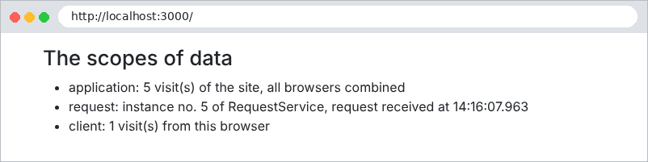

6. Data Scopes
A web application serves many users at once, and each user makes numerous requests. Data can therefore be shared at three levels, known as its scope:
- application scope: the data is shared by all users throughout the server’s lifetime (the list of doctors, for example);
- request scope: the data exists only for the duration of a request (a view’s model);
- client scope: the data is specific to a user and must persist from one request to the next (the selected language, the logged-in user).
The original course used the [ASP.NET] session for this last scope: a server-side storage space unique to each browser. This document, like the case study, does without it: client-side scope data is stored by the browser in cookies. The server does not store anything between two requests from the same user: it is said to be stateless ([stateless]). This is what makes it possible, for example, to run multiple identical servers behind a load balancer. The trade-off: a cookie is under the user’s control, and the user can read and modify it. Chapter 8 will show how a signed token makes it possible to trust the cookie despite this.
6.1. Example 23: Three Scopes
The file [src/compteur.service.ts]:
| import { Injectable } from '@nestjs/common';
// scope APPLICATION (the default): a single instance, created at startup and
// shared by TOUTES; requests from TOUS; users
@Injectable()
export class CompteurService {
private total = 0;
incrementer(): number {
return ++this.total;
}
}
|
Lines 5–6: By default, a [NestJS] service is a singleton: a single instance, created at startup, shared by all requests. Its [total] field therefore has application scope.
The [src/requete.service.ts] file:
| import { Injectable, Scope } from '@nestjs/common';
let instancesCreees = 0;
// scope REQUÊTE: one NOUVELLE instance for each HTTP request
@Injectable({ scope: Scope.REQUEST })
export class RequeteService {
readonly numero = ++instancesCreees;
}
|
Line 6: The [scope: Scope.REQUEST] option requests a new instance for each request. The instance number indicates this. This option is rarely used: it incurs a cost (creating objects for each request), and it propagates—a controller that depends on a request-scope service becomes request-scope itself. [res.locals] is usually sufficient.
The file [src/portees.controller.ts]:
| import { Controller, Get, Req, Res } from '@nestjs/common';
import { Request, Response } from 'express';
import { CompteurService } from './compteur.service';
import { RequeteService } from './requete.service';
@Controller()
export class PorteesController {
constructor(
private readonly compteur: CompteurService,
private readonly requete: RequeteService,
) {}
@Get()
portees(@Req() req: Request, @Res() res: Response): void {
// scope CLIENT: data stored by NAVIGATEUR (cookie),
// sent back to the server with each request
const mesVisites = Number(req.cookies?.mesVisites ?? 0) + 1;
res.cookie('mesVisites', String(mesVisites), { httpOnly: true, sameSite: 'lax' });
res.render('portees', {
total: this.compteur.incrementer(),
instance: this.requete.numero,
mesVisites,
});
}
}
|
- lines 8–11: both services are injected;
- lines 17–18: the client scope: a counter stored in a cookie. The browser sends it back with every request; the action increments it and stores it back;
- lines 19–23: the three values are passed to the view.
The file [src/main.ts]:
| import { NestFactory } from '@nestjs/core';
import { NestExpressApplication } from '@nestjs/platform-express';
import * as cookieParser from 'cookie-parser';
import { NextFunction, Request, Response } from 'express';
import { dirname, join } from 'path';
import { AppModule } from './app.module';
async function bootstrap() {
const app = await NestFactory.create<NestExpressApplication>(AppModule);
app.useStaticAssets(join(dirname(require.resolve('bootstrap/package.json')), 'dist'), { prefix: '/bootstrap/' });
app.setBaseViewsDir(join(__dirname, '..', 'views'));
app.setViewEngine('hbs');
app.use(cookieParser());
// scope REQUÊTE: res.locals is created and deleted with the request
app.use((req: Request, res: Response, next: NextFunction) => {
res.locals.debut = new Date().toISOString().slice(11, 23);
next();
});
await app.listen(3000);
console.log('Serveur démarré sur http://localhost:3000');
}
bootstrap();
|
lines 15–18: the request scope with [res.locals]: the time the request was received.
The file [views/portees.hbs]:
| <h1 class="h3">Les portées des données</h1>
<ul>
<li>application : {{total}} visite(s) du site, tous navigateurs confondus</li>
<li>requête : instance n° {{instance}} de RequeteService, requête reçue à {{debut}}</li>
<li>client : {{mesVisites}} visite(s) de ce navigateur</li>
</ul>
|

Let’s simulate two browsers with [curl] and two cookie files, [a.txt] and [b.txt]. Browser A makes two requests, then browser B makes one, and finally A makes one more:
| curl -c a.txt -b a.txt http://localhost:3000/
curl -c a.txt -b a.txt http://localhost:3000/
curl -c b.txt -b b.txt http://localhost:3000/
curl -c a.txt -b a.txt http://localhost:3000/
|
| navigateur A :
application : 1 visite(s) du site, tous navigateurs confondus
requête : instance n° 1 de RequeteService, requête reçue à 14:16:07.195
client : 1 visite(s) de ce navigateur
navigateur A :
application : 2 visite(s) du site, tous navigateurs confondus
requête : instance n° 2 de RequeteService, requête reçue à 14:16:07.237
client : 2 visite(s) de ce navigateur
navigateur B :
application : 3 visite(s) du site, tous navigateurs confondus
requête : instance n° 3 de RequeteService, requête reçue à 14:16:07.251
client : 1 visite(s) de ce navigateur
navigateur A :
application : 4 visite(s) du site, tous navigateurs confondus
requête : instance n° 4 de RequeteService, requête reçue à 14:16:07.263
client : 3 visite(s) de ce navigateur
|
- The application counter counts all visits: 1, 2, 3, 4;
- each request has its own instance of [RequeteService]: 1, 2, 3, 4;
- The client counter is specific to each browser: A has 3 visits, B has 1.
In the case study:
Scope | Data | Where? |
Application | Lists of doctors and clients, dictionaries, pending CAPTCHAs | Singleton services ([ApplicationModelService], [CaptchaService]...) |
Request | language, path, flash message, logged-in user | [res.locals] |
client | authentication token, language, flash message | cookies |